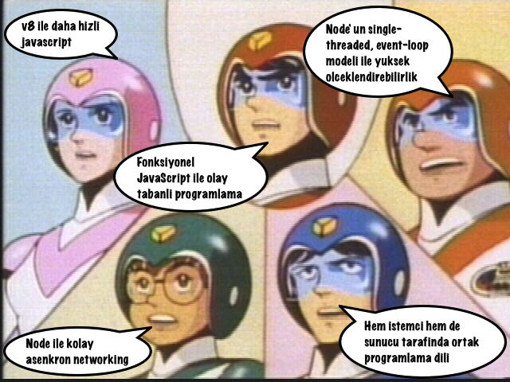
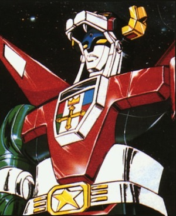
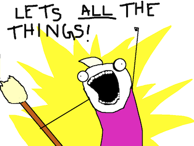
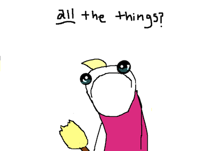
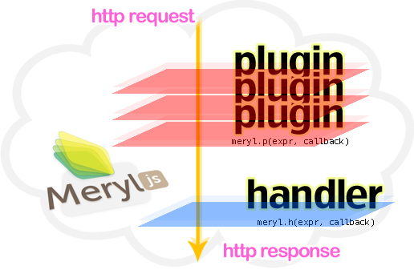
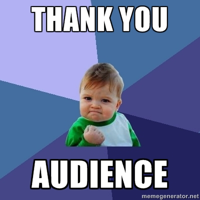

Node, Connect ve Meryl ile Web Uygulama Gelistirme
~ Kadir PekelBen Kimim?
 Kadir Pekel
Kadir Pekel
Developer / Hacker / Blogger / Father
- Blog: kadirpekel.com
- Twitter: twitter.com/kadirpekel
- Github: github.com/kadirpekel
- Linkedin: linkedin.com/kadirpekel
JavaScript ile Web Uygulamalari mi?
Yahu bu JavaScript; web sayfalarinda kayan menuler, imleci takip eden saatler, kar yagdirma efektleri vs. yapmamiza yarayan birsey degil miydi?
Tabi ki Hayir!
JavaScript is the world's most misunderstood programming language.~ Douglas Crockford
- Her zaman oyleydi.
- Web 2.0/AJAX akimi ile beraber istemci tabanli uygulamalar JavaScript' in populeritesine ivme kazandirdi.
- Google,
V8adiyla Lars Bak' in onderliginde gelistirilen nihayet hizli bir derleyici(neden?) tanitti. - Ryan Dahl
V8motorunun uzerindeNodeadiyla, asenkron ag kabiliyetleri on planda bir standart kitaplik gelistrdi.
JavaScript gercek bir programlama dili
Peki JavaScript ile sunucu tarafli web uygulama gelistirmeyi cazip kilan nedir?

Hizli, etkin, olceklenebilir, olay tabanli ve asenkron bir uygulama gelistirme platformu!


var http = require('http');
var server = http.createServer(function(req, resp) {
resp.end('Hello World');
});
server.listen(3000);
Javascript ile web uygulamalari yazabilirim!
 
Iyi ama daha fazlasina ihtiyacim yok mu?
Modern bir web uygulamasi gelistirebilmek icin gerekli bir kac unsura ihtiyacimiz var.
- Orta katman mimarisi (oturum, cerez, statik icerik vs. yonetimi)
- Sablonlama altyapisi (templating)
- Url yonlendirme (routing)
- Http durum yonetimi (40x, 50x http kodlari)
- Moduler yapilanma (seperation of concerns)
Minimalist web framework for nodejs
Ayaklarimizi suya sokalim.
// take the pills
var meryl = require('meryl');
// first, take it easy
meryl.get('/', function (req, resp) {
resp.end('<h3>Hello, World!</h3>');
});
// not impressed? let it interfere with blood some more
meryl.get('/greet/{who}', function(req, resp) {
resp.render('greeter_template', {name: req.params.who});
});
// lay down and enjoy it
meryl.plug('GET *', function(req, resp, next) {
resp.setHeader('server', 'meryl');
next();
});
// now you are a 'meryl' junkie
meryl.run();
Tam olarak nasil?
Eklentiler (Plugins)
var meryl = require('meryl');
var users = { 'id1': 'kermit', 'id2': 'beaker' };
// Simple authorization plugin
meryl.plug('*', function(req, resp, next) {
var username = users[req.params.query.userid];
if (username) {
req.username = username;
next();
} else {
resp.statusCode = 401;
throw new Error('access denied');
}
});
meryl.get('/', function (req, resp) {
resp.end('Hello ' + req.username);
});
meryl.run();
Yonlendiriciler (routers)
var meryl = require('meryl');
var users = { 'id1': 'kermit', 'id2': 'beaker' };
meryl.get('/', function (req, resp) {
for (userid in users) {
var username = users[userid];
resp.write('<a href="/users/' + username + '">' + username +'</a>');
}
resp.end();
});
meryl.get('/users/{username}', function (req, resp) {
resp.end('Hello ' + (req.params.username || 'World'));
});
meryl.run();
Soblonlar (templates)
var meryl = require('meryl');
var users = { 'id1': 'kermit', 'id2': 'beaker' };
meryl.get('/', function (req, resp) {
resp.render('index', {'users': users});
});
meryl.get('/users/{username}', function (req, resp) {
resp.render('userdetail', {'username': req.params.username});
});
meryl.run();
<!-- index.jshtml -->
<ul>
<% for (userid in users) { %>
<li>
<a href="/users/<%= users[userid] %>"><%= users[userid] %></a>
</li>
<% } %>
</ul>
<!-- userdetail.jshtml -->
<h1>Hello <%= username %></h1>
SORU - CEVAP
TESEKKURLER :)
kadirpekel@gmail.com